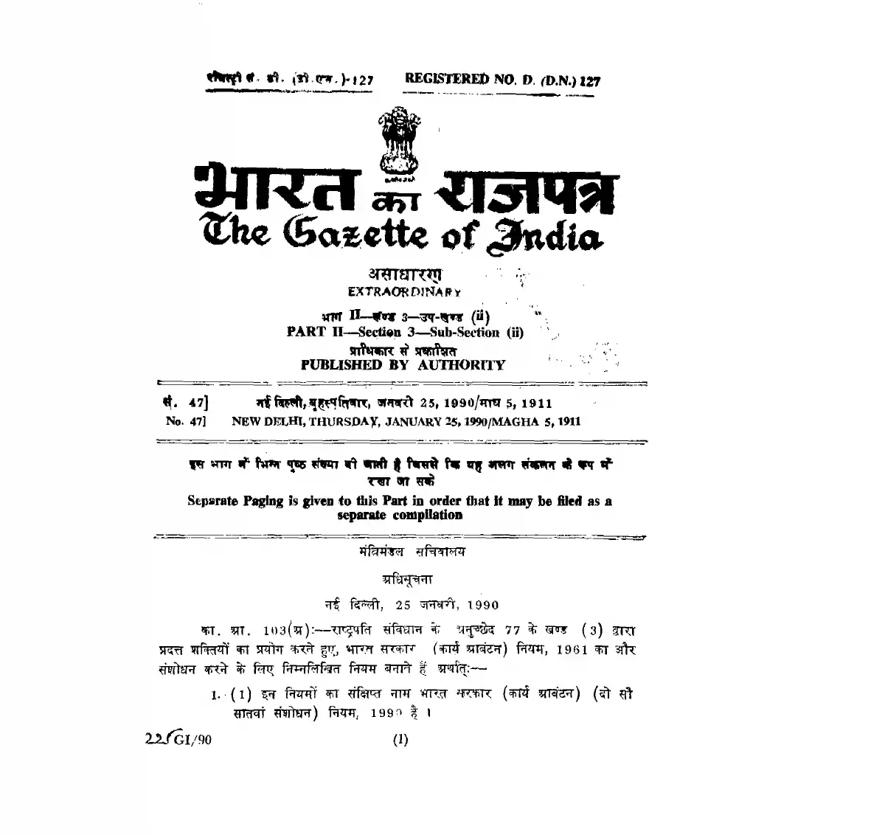
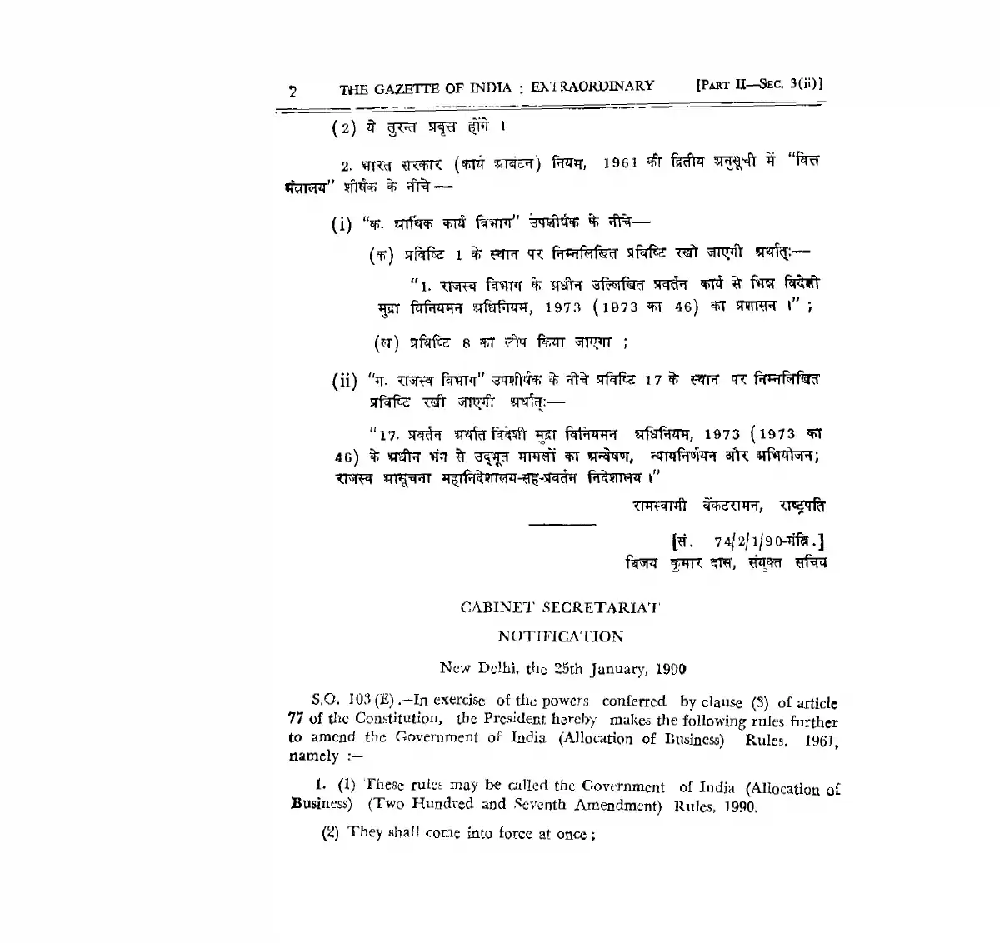
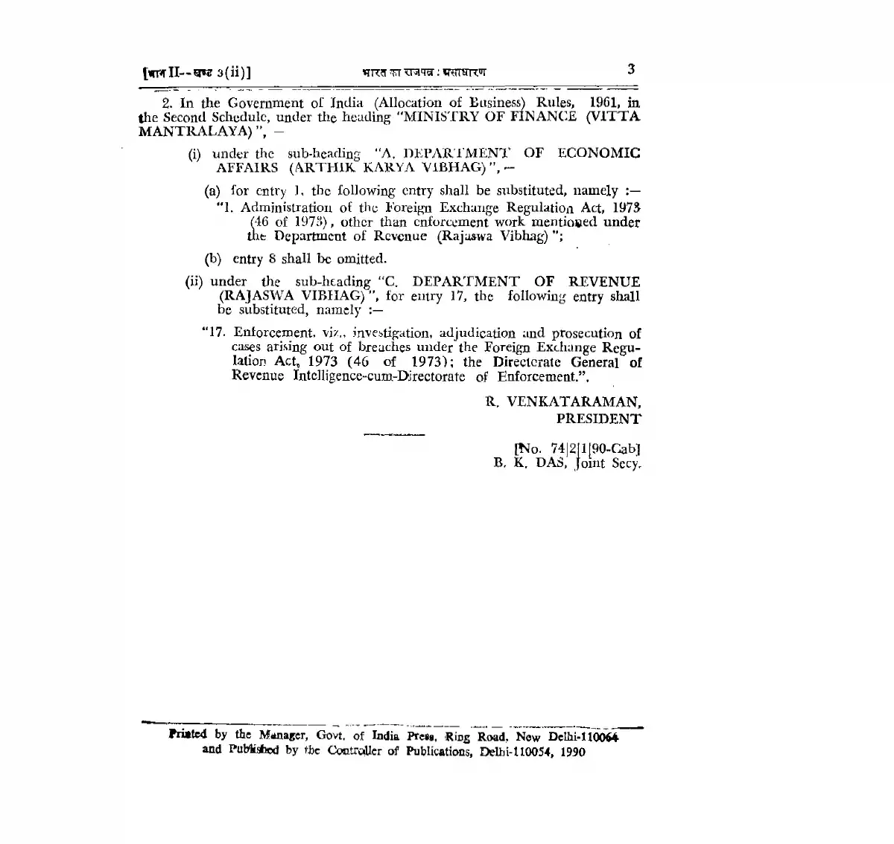

Amendment #207 (S.O. 103(E), 1990)
3 changes: 0 to the First Schedule, 3 to the Second Schedule. 3 applied
The order, page by page
Page 1 of 4

Page 2 of 4

Page 3 of 4

123Schedule 2 › MINISTRY OF FINANCE › DEPARTMENT OF ECONOMIC AFFAIRS › entry 1
- 1. Administration of the Foreign Exchange Regulation Act, 1973 (46 of 1973), other than enforcement work mentioned under the Department of Revenue (Rajaswa Vibhag)
applied at schedule 2 › ministry MINISTRY OF FINANCE › department A › group_heading I › entry 1 in the Rules after #207
Schedule 2 › MINISTRY OF FINANCE › DEPARTMENT OF ECONOMIC AFFAIRS › entry 8
applied at schedule 2 › ministry MINISTRY OF FINANCE › department A › group_heading II › entry 8 in the Rules after #207
Schedule 2 › MINISTRY OF FINANCE › DEPARTMENT OF REVENUE › entry 17
- 17. Enforcement, viz., investigation, adjudication and prosecution of cases arising out of breaches under the Foreign Exchange Regulation Act, 1973 (46 of 1973); the Directorate General of Revenue Intelligence-cum-Directorate of Enforcement.
applied at schedule 2 › ministry MINISTRY OF FINANCE › department C › entry 17 in the Rules after #207
Page 4 of 4
How this document was read
From the Government of India (Allocation of Business) Rules, 1961 and their amendments, as published by the Cabinet Secretariat (cabsec.gov.in), read by orgpedia. The readings of the older scanned gazettes have known gaps.